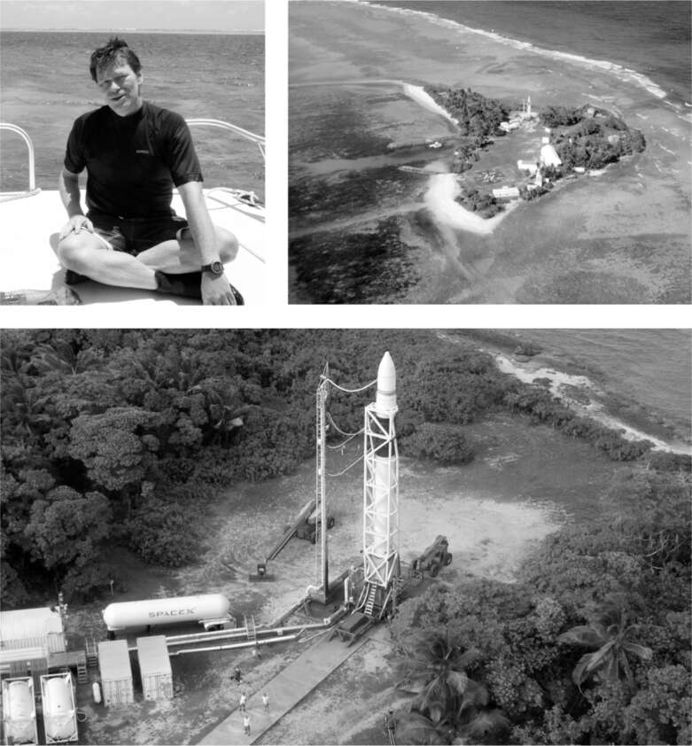

Catch-22
Musk đã lên kế hoạch phóng tên lửa của SpaceX từ một trong những địa điểm thuận tiện nhất có thể: Căn cứ Không quân Vandenberg, một cơ sở rộng 100.000 mẫu Anh trên bờ biển California gần Santa Barbara. Tên lửa và các thiết bị khác có thể dễ dàng được vận chuyển đến đó từ trụ sở và nhà máy của SpaceX ở Los Angeles, cách đó khoảng 160 dặm về phía nam.
Vấn đề nằm ở chỗ căn cứ này do Không quân quản lý, một tổ chức cực kỳ coi trọng quy tắc và yêu cầu. Điều này không phù hợp với Musk, người đang xây dựng văn hóa đặt câu hỏi với mọi quy tắc và cho rằng mọi yêu cầu đều vô lý cho đến khi được chứng minh ngược lại. "Không quân và chúng tôi hoàn toàn không hợp nhau", Hans Koenigsmann, khi đó là kỹ sư trưởng phụ trách phóng của SpaceX, cho biết. "Họ có một số yêu cầu mà Elon và tôi đã cười đến nghẹt thở." Sau một thoáng suy nghĩ, ông nói thêm: "Có lẽ họ cũng cười chúng tôi như vậy".
Tình hình càng trở nên tồi tệ hơn khi Vandenberg được lên kế hoạch phóng một vệ tinh gián điệp tối mật trị giá 1 tỷ đô la. Vào mùa xuân năm 2005, ngay khi Falcon 1 của SpaceX sẵn sàng, Không quân đã ra lệnh rằng SpaceX sẽ không được sử dụng bệ phóng của họ cho đến khi vệ tinh được phóng thành công, và họ không thể đưa ra bất kỳ thời gian biểu nào cho việc này.
SpaceX không có ai chi trả chi phí. Họ không có hợp đồng cộng thêm chi phí, và chỉ được thanh toán khi phóng hoặc đạt được các mốc nhất định. Ngược lại, Lockheed lại được hưởng lợi mỗi khi có sự chậm trễ. Sau cuộc họp qua điện thoại với các quan chức Không quân vào tháng 5 năm 2005, khi nhận ra SpaceX sẽ không sớm được phép phóng, Musk đã gọi cho Tim Buzza và bảo anh bắt đầu đóng gói. Họ sẽ chuyển tên lửa đến một địa điểm khác. May mắn thay, họ có một địa điểm khả dụng. Không may là, nó bất tiện như Vandenberg tiện lợi.
Gwynne Shotwell đã giành được cho SpaceX một hợp đồng trị giá 6 triệu đô la vào năm 2003 để phóng một vệ tinh liên lạc cho Malaysia. Vấn đề là vệ tinh này quá nặng nên phải được phóng gần đường xích đạo, nơi vòng quay nhanh hơn của bề mặt Trái đất sẽ cung cấp lực đẩy bổ sung cần thiết.
Shotwell mời Koenigsmann vào phòng làm việc của cô tại SpaceX, trải bản đồ thế giới ra và di chuyển ngón tay về phía tây dọc theo đường xích đạo. Không có gì được tìm thấy cho đến khi đến giữa Thái Bình Dương: Quần đảo Marshall, cách Los Angeles khoảng bốn nghìn tám trăm dặm. Nó gần đường đổi ngày quốc tế, nhưng không có gì khác. Từng là lãnh thổ của Hoa Kỳ được sử dụng làm địa điểm thử nghiệm vũ khí nguyên tử và tên lửa, Quần đảo Marshall đã trở thành một nước cộng hòa độc lập nhưng vẫn liên kết chặt chẽ với Hoa Kỳ, nơi duy trì các căn cứ quân sự ở đó. Một trong số đó nằm trên một chuỗi đảo san hô và cát nhỏ được gọi là Kwajalein Atoll.
Đảo Kwajalein, được gọi là Kwaj, là điểm lớn nhất trong đảo san hô. Nó là nơi đặt một căn cứ của Quân đội Hoa Kỳ với các cơ sở khách sạn cũ kỹ giống như ký túc xá và một đường băng cố gắng được coi là sân bay. Mỗi tuần có ba chuyến bay từ Honolulu. Tính cả thời gian quá cảnh, mất gần hai mươi giờ để đi từ Los Angeles đến Kwaj.
Khi Shotwell tìm hiểu về Kwaj, cô phát hiện ra rằng các cơ sở này do Bộ Tư lệnh Phòng thủ Tên lửa và Không gian của Quân đội quản lý, có trụ sở tại Huntsville, Alabama. Người phụ trách là Thiếu tá Tim Mango, một cái tên khiến Musk bật cười. "Nó giống như trong tiểu thuyết Catch-22 vậy," anh nói. "Một người nào đó ở Lầu Năm Góc quyết định chọn một người tên là Thiếu tá Mango để điều hành một căn cứ trên đảo nhiệt đới."
Musk gọi điện bất ngờ cho Mango và giải thích rằng ông từng là người sáng lập PayPal và hiện đang kinh doanh phóng tên lửa. Mango nghe máy vài phút rồi cúp máy. "Tôi nghĩ ông ta bị điên," Mango nói với Eric Berger của Ars Technica. Sau đó, Mango tìm kiếm Musk trên Google, thấy ảnh ông ấy bên cạnh chiếc McLaren triệu đô, đọc được thông tin ông ấy đã thành lập một công ty tên là SpaceX, và nhận ra rằng Musk nói thật. Lướt qua trang web của SpaceX, Mango tìm thấy số điện thoại của công ty và gọi lại. Người đàn ông với giọng Nam Phi nhẹ nhàng đó lại trả lời. "Này, anh vừa cúp máy tôi đấy à?" Musk hỏi.
Mango đồng ý đến gặp Musk ở Los Angeles. Sau khi trò chuyện một lúc trong văn phòng nhỏ của Musk, ông mời Mango đi ăn tối tại một nhà hàng sang trọng. Mango hỏi ý kiến nhân viên đạo đức chính phủ, người này nói rằng ông phải tự trả tiền, vì vậy họ đến Applebee's. Musk và một số thành viên trong nhóm đáp lễ bằng cách bay đến Huntsville một tháng sau đó để gặp Mango và nhóm của ông. Lần này họ ăn ngon hơn, tại một quán ăn ven đường địa phương nổi tiếng với món cá da trơn chiên giòn nguyên con. Musk ăn một con, cùng với một ít bánh hushpuppies. Ông muốn ký kết một thỏa thuận.
Thiếu tá Mango cũng vậy. Căn cứ của ông tại Kwaj, giống như nhiều cơ sở tương tự, được yêu cầu phải tìm kiếm các hợp đồng thương mại để trang trải tới một nửa ngân sách của họ. "Vì vậy, Thiếu tá Mango đã trải thảm đỏ cho chúng tôi, trong khi Không quân lại hắt hủi chúng tôi ở Vandenberg," Musk nói. Trên chuyến bay từ Huntsville, Musk nói với nhóm của mình: "Hãy đến Kwaj." Vài tuần sau, họ bay trên máy bay riêng của ông đến đảo san hô xa xôi, tham quan bằng trực thăng Huey mui trần và quyết định chuyển địa điểm phóng của họ đến đó.
Nhiều năm sau, Musk thừa nhận rằng việc chuyển đến Kwaj là một sai lầm. Ông ấy đáng lẽ nên đợi Vandenberg sẵn sàng. Nhưng điều đó đòi hỏi sự kiên nhẫn, một đức tính mà ông thiếu. "Tôi đã không nhận ra việc xử lý hậu cần và không khí mặn sẽ lộn xộn như thế nào," ông nói về Kwaj. "Thỉnh thoảng bạn tự bắn vào chân mình. Nếu bạn phải chọn một con đường làm giảm khả năng thành công, thì đó sẽ là phóng từ một hòn đảo nhiệt đới xa xôi." Rồi ông cười. Giờ đây, khi vết thương đã lành, ông nhận ra rằng Kwaj là một cuộc phiêu lưu đáng nhớ. Như kỹ sư trưởng phụ trách phóng Koenigsmann giải thích: "Bốn năm ở Kwaj đã rèn giũa, gắn kết chúng tôi và dạy chúng tôi làm việc nhóm."
Một nhóm kỹ sư SpaceX gan dạ đã chuyển đến doanh trại trên đảo Kwajalein. Địa điểm phóng nằm cách đó hai mươi dặm trên một hòn đảo nhỏ hơn nữa trong đảo san hô, được gọi là Omelek. Rộng khoảng bảy trăm feet và không có người ở, hòn đảo này có thể đến được bằng cách đi catamaran trong bốn mươi lăm phút, một chuyến đi có thể gây cháy nắng ngay cả khi mặc áo phông vào sáng sớm. Tại đó, nhóm SpaceX đã dựng một xe moóc đôi làm văn phòng và đổ bê tông cho bệ phóng.
Sau vài tháng, một số thành viên trong phi hành đoàn quyết định ngủ lại trên Omelek sẽ dễ dàng hơn là phải di chuyển qua đầm phá mỗi sáng và tối. Họ trang bị cho xe moóc nệm, tủ lạnh nhỏ và vỉ nướng, nơi một kỹ sư SpaceX vui tính, có râu dê đến từ Thổ Nhĩ Kỳ tên là Bülent Altan đã hoàn thiện cách nấu món thịt bò xay và sữa chua hầm. Bầu không khí là sự pha trộn giữa Đảo Gilligan và Người sống sót, nhưng có thêm một bệ phóng tên lửa. Mỗi khi một người mới ở lại qua đêm, họ sẽ được tặng một chiếc áo phông in khẩu hiệu "Làm việc chăm chỉ hơn, Uống nhiều hơn, Phóng xa hơn."
Theo yêu cầu của Musk, đội ngũ đã nghĩ ra cách tiết kiệm chi phí. Thay vì lát đường bê tông dài 150 thước Anh giữa nhà chứa máy bay và bệ phóng, họ chế tạo một khung có bánh xe để vận chuyển tên lửa, đặt những tấm gỗ dán xuống đất, lăn tên lửa đi một đoạn ngắn, rồi lại di chuyển gỗ dán để tạo đường lăn tiếp.
Đội ngũ ở Kwaj đã ứng biến và khác biệt với Boeing như thế nào? Đầu năm 2006, họ dự định thực hiện một bài kiểm tra bắn tĩnh, tức là đốt động cơ trong thời gian ngắn trong khi tên lửa vẫn gắn liền với bệ phóng. Nhưng khi bắt đầu thử nghiệm, họ phát hiện ra rằng tầng thứ hai không nhận đủ điện. Hóa ra các hộp điện do Altan, kỹ sư nấu món goulash, thiết kế có tụ điện không thể chịu được điện áp cao mà đội phóng đã quyết định sử dụng. Altan rất lo lắng vì thời gian cho phép thử nghiệm tĩnh của Quân đội chỉ còn bốn ngày. Anh vội vàng tìm cách khắc phục.
Các tụ điện có sẵn tại một cửa hàng cung cấp thiết bị điện tử ở Minnesota. Một thực tập sinh ở Texas được cử đến đó. Trong khi đó, Altan tháo các hộp điện khỏi tên lửa trên Omelek, lên thuyền đến Kwaj, ngủ trên một tấm bê tông bên ngoài sân bay chờ chuyến bay sáng sớm đến Honolulu, và nối chuyến đến Los Angeles, nơi vợ anh đón và đưa anh đến trụ sở SpaceX. Tại đó, anh gặp thực tập sinh, người đã đến từ Minnesota với những tụ điện mới. Anh thay chúng vào các hộp điện bị lỗi và vội vã về nhà thay quần áo trong hai giờ để kiểm tra các hộp. Sau đó, anh và Musk lên máy bay riêng của Musk để trở lại Kwaj, mang theo thực tập sinh như một phần thưởng. Altan hy vọng được ngủ trên máy bay - anh đã thức gần bốn mươi tiếng đồng hồ - nhưng Musk liên tục hỏi anh về mọi chi tiết của mạch điện. Một chiếc trực thăng đưa họ từ sân bay Kwaj đến Omelek, nơi Altan lắp các hộp đã sửa chữa vào tên lửa. Chúng hoạt động tốt. Bài kiểm tra bắn tĩnh ba giây đã thành công, và lần phóng thử đầu tiên của Falcon 1 được lên lịch vài tuần sau đó.

.Hans Koenigsmann và Đảo Omelek ở Đảo san hô Kwajalein